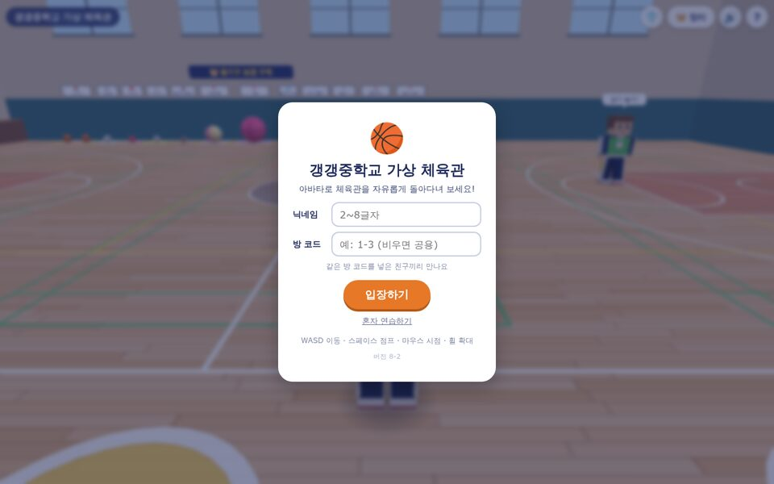
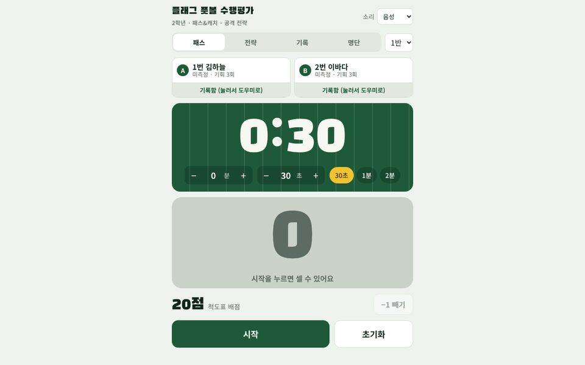
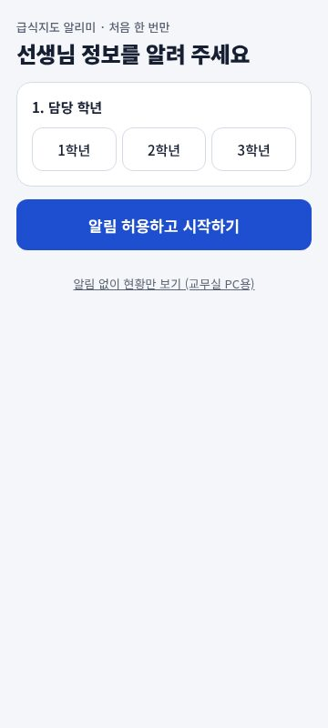
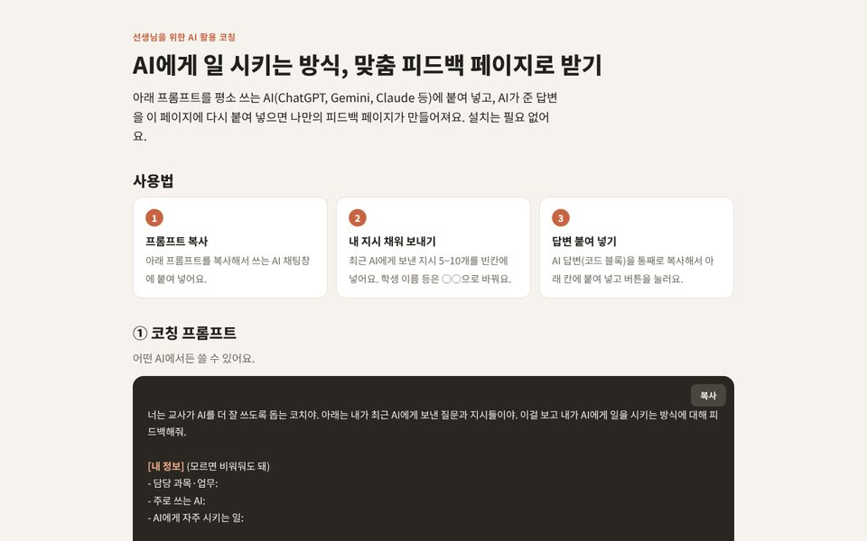

클릭 · 스페이스 · → 로 넘기기
코딩 몰라도 됩니다
‘기엽쌤의 업무도구’를 만든 이야기 · 김기엽
오늘은 어려운 말 대신 학교 말로만 설명할게요
실제로 쓰고 있어요

체육 수업갱갱중학교 가상 체육관 아바타로 돌아다니는 3D 체육관눌러서 열어보기 ↗
평가·기록플래그풋볼 수행평가 점수 기록하고 모둠 짜기눌러서 열어보기 ↗
학교 업무급식지도 알리미 내 당번 차례를 폰 알림으로눌러서 열어보기 ↗
AI 활용AI 지시 코칭 프롬프트 AI에게 부탁하는 법 진단눌러서 열어보기 ↗이 중에 제가 직접 친 코드는 한 줄도 없어요
용어 몰라도 괜찮아요
급식지도 알리미를 만들 때
…오류 나면 1번부터 다시 😇
실제로 있었던 일
제가 한 일은 기다리기뿐
저는 그동안 급식지도 다녀왔어요 🍚
고치는 것도
담당 학년 선택
학년을 선택하세요 ▾
요일 입력 (예: 월,수)
[저장]
선생님 정보를 알려 주세요
다시 올리는 것까지 조교가 해요
잘 부탁하는 요령
✗급식 앱 만들어줘
✓우리 학교 선생님들이 폰으로 보는, 내 급식지도 차례를 알려주는 앱. 글씨 크게, 버튼 하나로.
어렵지 않아요